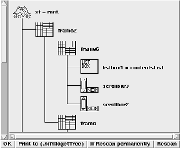

This procedure activates the widget tree dialog. Here, the widget tree is displayed as a simple graph. The user can restrict the displayed widget tree to a subtree.

Figure: The procedure XFProcProgWidgetTree
The items representing the various widgets have a popup menu attatched to the left mouse button. Here, all widget specific dialogs can be activated. With this menu, the user can also restrict the displayed widgets to a subtree, and remove the restriction. It is possible to set the current widget with the standard binding (usually with a doubleclick with the middle mouse button). The button (Print to (./xfWidgetTree)) writes a postscript hardcopy of the displayed widget tree to the file ./xfWidgetTree.